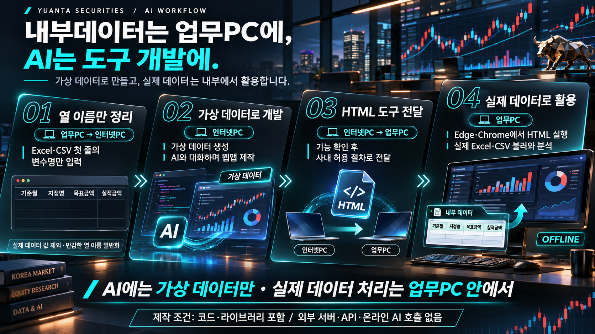

임원 교육
AI로 읽는 경쟁환경, 경영 브리핑과 실행 리더십
강의 슬라이드 보기AIbility Academy STEP-UP · Leader 과정
임원의 거시적 경영 브리핑, 본사 팀장의 운영 프로세스 개선, 지점장의 리테일 자산관리 실행을 유기적으로 연결합니다. 대상별 강의 슬라이드에 바로 접근하세요.

망분리 환경 활용 안내AI로 읽는 경쟁환경, 경영 브리핑과 실행 리더십
강의 슬라이드 보기경영 질문을 팀의 실행으로
강의 슬라이드 보기AI와 함께 만드는 영업직원 코칭 대시보드
강의 슬라이드 보기교육 대상에 맞는 강의를 선택해 주세요.